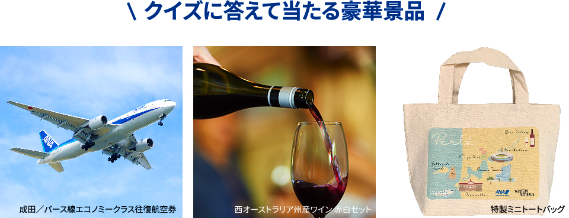
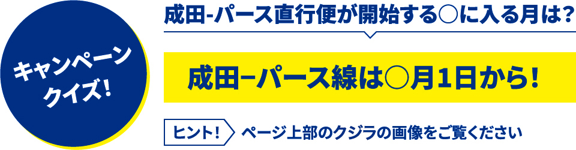
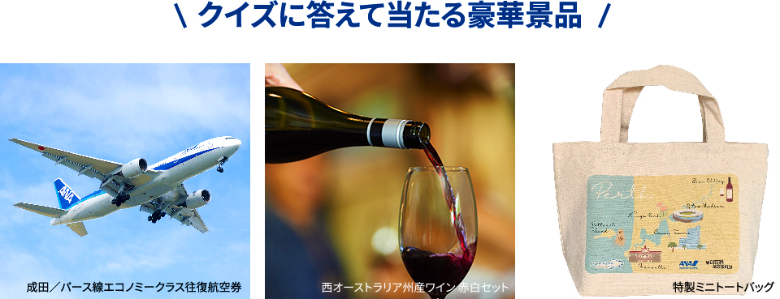
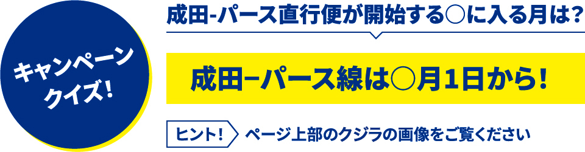

9月1日、西オーストラリア州の州都であるパースへ、ANAが成田からデイリー運航を開始します。パースへの直行便は実に8年ぶり。オーストラリアの国土の3分の1を占める広大な土地に多様な魅力を揃え、オフラインであった期間にも日本人旅行者を増やし続けた西オーストラリア州は、注目著しいオーストラリア市場でも抜群の可能性を秘めています。
直行便の成功は、旅行業界の皆様のご協力があってこそ。パース線と西オーストラリア州の観光素材についてご紹介するとともに、航空券を含む素敵な賞品が■名様に当たるクイズキャンペーンを実施します。ご応募お待ちしています！
| 便名 | 出発空港 | 出発時間 | 到着空港 | 到着時間 | 運航日 |
|---|---|---|---|---|---|
| NH881 | NRT | 11時10分 | PER | 20時15分 | 毎日 |
| NH882 | PER | 21時45分 | NRT | 08時25分(+1) | 毎日 |
| 便名 | NH881 | NH882 |
|---|---|---|
| 出発空港 | NRT | PER |
| 出発時間 | 11時10分 | 21時45分 |
| 到着空港 | PER | NRT |
| 到着時間 | 20時15分 | 08時25分(+1) |
| 運航日 | 毎日 | 毎日 |
使用機材：B787-8
（ビジネスクラス32席、プレミアムエコノミー14席、エコノミークラス138席）
快適なパースへの空の旅を
お届けいたします！
ANAのパース線で使用される予定のB787-8型機は、全席にUSBポートやコンセントを完備。フルフラットシートのビジネスクラスは、スタッガードスタイルで全席から通路にアクセス可能。ピエール・エルメ・パリなど名だたる匠たちの監修による機内食など充実したサービスもお楽しみいただけます。
また、プレミアムエコノミーは約97cmと余裕のシートピッチを誇り、ドリンクやデザートにビジネスクラスセレクションのメニューを提供。エコノミークラスでも9インチの高解像度液晶モニターやフットレスト、ヘッドレストを搭載し、パースへの空の旅を快適にお過ごしいただけます。
西オーストラリア州は南北約2300km、東西約1600kmで、その面積は日本の約7倍！その広大な土地に、世界自然遺産として登録されているシャークベイやオーストラリア随一のワイン産地であるマーガレットリバー、「世界一幸せな動物」として日本でも人気のクオッカなど、魅力ある観光素材が溢れています。
パースは、オーストラリアの州都のなかで最も晴天が多く、コンパクトな街並みは散策にも最適。美しいビーチや市民の憩いの場所キングス・パークなど見どころも豊富です。クオッカが暮らすロットネスト島や州内で最も古いワイン生産地のスワンバレー、歴史ある港町フリーマントルなどがすべて30分圏内に揃っていることも強み。
最近は、ウォーターフロントエリアで大規模な再開発が完了したほか、開業間近のリッツ・カールトンを含めてホテル客室も大きく増加。日本からはANAの直行便はもちろん、日本各地からアジア系航空会社の経由便も利用でき、FITから団体まで多様なお客様をお迎えできるデスティネーションとして成長を続けています。
西オーストラリア観光の目玉のひとつが、7月から12月ごろにかけて咲き誇るワイルドフラワー。1万2000種にのぼる多様な花々が、海辺や草原、森林などあらゆる場所で目を楽しませます。ワイルドフラワーは、日本の桜前線のように北から南へとシーズンが移っていくため、楽しめる期間が長いのも特徴です。
ワイルドフラワー以外にも、風によって削り出された奇岩が砂漠に立ち並ぶピナクルズや世界自然遺産のパヌルル国立公園のバングル・バングル、湖水が鮮烈なピンク色のヒリアー湖、世界一長い観光鍾乳洞であるジュエル・ケーブ・オーガスタなど、驚くべき大自然が目白押しです。
西オーストラリア州は北、西、南の三方が海に面し、海岸線はなんと延長1.2万km！オーストラリアの海というと東海岸が有名ですが、こちらも超充実の観光素材が旅行者を待っています。
例えば、ニンガルーリーフではジンベエザメやザトウクジラと一緒に泳ぐアクティビティが大人気ですし、シュノーケリングでジュゴンやウミガメに出会えるチャンスも。南側のラッキーベイはカンガルーが出没する唯一の海岸でビーチとしても抜群の美しさ。さらに、北部のブルームでは3月から10月までの満月の夜、干潮の海に月明かりが映え「月への階段」が出現します。
海岸沿いにはオートキャンプ場も多数あり、今後はセルフドライブのプロモーションも計画されています。
西オーストラリア州は世界で最も生物多様性に富んだ地域のひとつ。シーフードやオーガニック野菜はもちろん、トリュフなどの食材も非常に豊富です。
州内で最も有名なワイン生産地であるマーガレット・リバーは、オーストラリア全体のワイン生産量の3％にも満たない規模ですが、プレミアムワインのみで計算すると30％以上を占める特別な場所。世界レベルのワイナリーでの見学や試飲、あるいは食事体験はきっと素晴らしい思い出となるでしょう。
ちなみにパースは、オーストラリアの州都で人口1人あたりの飲食店の数が最多！バーの文化が発展していることでも有名です。
 



対象商品
- 成田／パース線エコノミークラス往復航空券 1組2名
- 西オーストラリア州産ワイン 赤白セット 5名
- 特製ミニトートバッグ ■名
※注意事項1注意事項1注意事項1注意事項1注意事項1注意事項1注意事項1注意事項1注意事項1注意事項1注意事項1注意事項1注意事項1注意事項1注意事項1
※注意事項2注意事項2注意事項2注意事項2注意事項2注意事項2注意事項2注意事項2注意事項2注意事項2注意事項2注意事項2注意事項2注意事項2注意事項2
応募締め切り
2019年6月24日24時まで
※注意事項1注意事項1注意事項1注意事項1注意事項1注意事項1注意事項1注意事項1注意事項1注意事項1注意事項1注意事項1注意事項1注意事項1注意事項1
※注意事項2注意事項2注意事項2注意事項2注意事項2注意事項2注意事項2注意事項2注意事項2注意事項2注意事項2注意事項2注意事項2注意事項2注意事項2
応募方法
クイズ答えと必要情報を下記ボタンから
必要事項記載をしてご応募ください。
※注意事項1注意事項1注意事項1注意事項1注意事項1注意事項1注意事項1注意事項1注意事項1注意事項1注意事項1注意事項1注意事項1注意事項1注意事項1
※注意事項2注意事項2注意事項2注意事項2注意事項2注意事項2注意事項2注意事項2注意事項2注意事項2注意事項2注意事項2注意事項2注意事項2注意事項2